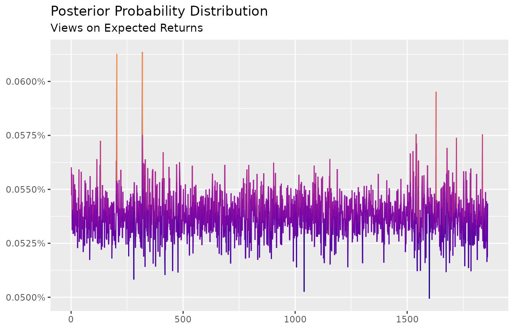

This vignette provides a “jump-start” for users that want to quickly understand how to use entropy-pooling (EP) to construct views on the market distribution. The methodology fits well in a variety of scenarios: stress-testing, macro factors, non-linear views, and more.
To demonstrate entropy-pooling’s firepower, the current vignette uses some of the cases Meucci (2008)1 leaves for the reader in the appendix. In particular, the usage of the following functions are covered in depth:
view_on_mean()view_on_volatility()view_on_correlation()view_on_rank()view_on_marginal_distribution()view_on_copula()
Along with the examples, the EuStockMarkets dataset - that comes with the installation of R - is used as a proxy for “the market”:
library(ffp)
library(ggplot2)
set.seed(321)
# invariance / stationarity
x <- diff(log(EuStockMarkets))
dim(x)
#> [1] 1859 4
head(x)
#> DAX SMI CAC FTSE
#> [1,] -0.009326550 0.006178360 -0.012658756 0.006770286
#> [2,] -0.004422175 -0.005880448 -0.018740638 -0.004889587
#> [3,] 0.009003794 0.003271184 -0.005779182 0.009027020
#> [4,] -0.001778217 0.001483372 0.008743353 0.005771847
#> [5,] -0.004676712 -0.008933417 -0.005120160 -0.007230164
#> [6,] 0.012427042 0.006737244 0.011714353 0.008517217Views on Expected Returns
Assume an investor believes the FTSE index return will be \(20\%\) above average in the near future. In order to process this view, the investor needs to minimize the relative entropy:
\[ \sum_{j=1}^J x_j(ln(x_j) - ln(p_j)) \]
Subject to the restriction:
\[ \ x_j V_{j, k} = \mu_{k} \]
In which \(x_{j}\) is a yet to be discovered posterior probability; \(V_{j,k}\) is a \(1859 \times 1\) vector with the FTSE returns; and \(\mu_{k}\) is a \(1 \times 1\) scalar with the investor projected return for the FTSE index. In this case, the \(k\) subscript represents the fourth column in x2.
Views on expected returns can be constructed with view_on_mean:
# Returns 20% higher than average
mu <- mean(x[ , "FTSE"]) * 1.2
# ffp views constructor
views <- view_on_mean(x = as.matrix(x[ , "FTSE"]), mean = mu)
views
#> # ffp view
#> Type: View On Mean
#> Aeq : Dim 1 x 1859
#> beq : Dim 1 x 1The views object is a list with two components, Aeq and beq, that are equivalent to the elements \(V_{j,k}\) transposed and \(\mu_{k}\), respectively.
The investor also needs to formulate a vector of prior probabilities, \(p_j\), which is usually - but not necessary - a equal-weight vector:
Once the prior and the views are established, the optimization can take place with entropy_pooling:
# Solve Minimum Relative Entropy (MRE)
ep <- entropy_pooling(
p = p_j,
Aeq = views$Aeq,
beq = views$beq,
solver = "nlminb"
)
ep
#> <ffp[1859]>
#> 0.0005425631 0.0005340012 0.000544236 0.0005418246 0.0005322989 ... 0.0005451271What is the interpretation for ep? Among all the possible probability vectors, ep is the one that can satisfy the views in the “least” evasive way (in which the term “least evasive” is direct reference to the prior). Therefore, ep is the best candidate for a posterior distribution.
In real world, the investor can have many views. Extending the current example, say the investor has a new belief: the CAC index returns will be \(10\%\) bellow average3:
mu <- c(
mean(x[ , "FTSE"]) * 1.2, # Return 20% higher than average
mean(x[ , "CAC"]) * 0.9 # Return 10% bellow average
)
# ffp views constructor
views <- view_on_mean(x = as.matrix(x[ , c("FTSE", "CAC")]), mean = mu)
views
#> # ffp view
#> Type: View On Mean
#> Aeq : Dim 2 x 1859
#> beq : Dim 2 x 1In which the elements Aeq and beq now have \(2\) rows each, one for every view.
The minimum relative entropy problem is solved in the exact same way:
# Solve MRE
ep <- entropy_pooling(
p = p_j,
Aeq = views$Aeq,
beq = views$beq,
solver = "nlminb"
)
ep
#> <ffp[1859]>
#> 0.0005602371 0.0005473082 0.0005573006 0.0005384979 0.000531066 ... 0.0005434801It’s easier to analyse the output of ep visually.
class(ep)
#> [1] "ffp" "vctrs_vctr"To that end, the autoplot method is available for objects of the ffp class:
autoplot(ep) +
scale_color_viridis_c(option = "C", end = 0.75) +
labs(title = "Posterior Probability Distribution",
subtitle = "Views on Expected Returns",
x = NULL,
y = NULL)
The plot reinforces the intuition of \(x_j\) - the posterior probability - as a distribution that distorts the prior in order to accommodate the views.
It’s easy to double-check the investor views by computing the ratio of the conditional vs. unconditional returns:
conditional <- ffp_moments(x, ep)$mu
unconditional <- colMeans(x)
conditional / unconditional - 1
#> DAX SMI CAC FTSE
#> 0.01335825 0.02078130 -0.09999999 0.20000009According to expectations, CAC outlook is now \(10\%\) bellow average and FTSE expected return is \(20\%\) above average. Violà!
Views on Volatility
Say the investor is confident that markets will be followed by a period of lull and bonanza. Without additional insights about expected returns, the investor anticipates that market volatility for the CAC index will drop by \(10\%\).
To impose views on volatility, the investor needs to minimize the expression:
\[ \sum_{j=1}^J x_j(ln(x_j) - ln(p_j)) \] Subject to the constraint:
\[ \sum_{j=1}^{J} x_j V_{j, k}^2 = \mu_{k}^2 + \sigma_{k}^2 \]
In which, \(x_j\) is a vector of yet to be defined posterior probabilities; \(V_{j,k}^2\) is a \(1859 \times 1\) vector with CAC squared returns; \(\mu_{k}^2\) and \(\sigma_{k}^2\) are the CAC sample mean and variance; and \(k\) is the column position of CAC in the panel \(V\).
The view_on_volatility function can be used for this purpose:
# opinion
vol_cond <- sd(x[ , "CAC"]) * 0.9
# views
views <- view_on_volatility(x = as.matrix(x[ , "CAC"]), vol = vol_cond)
views
#> # ffp view
#> Type: View On Volatility
#> Aeq : Dim 1 x 1859
#> beq : Dim 1 x 1The views object holds a list with two components - Aeq and beq - that are equivalent to the elements \(V_{j,k}^2\) transposed and \(\mu_{k}^2 + \sigma_{k}^2\), respectively.
To solve the relative entropy use the entropy_pooling function:
ep <- entropy_pooling(
p = p_j,
Aeq = views$Aeq,
beq = views$beq,
solver = "nlminb"
)
ep
#> <ffp[1859]>
#> 0.0005227495 0.0004701207 0.0005609239 0.0005476659 0.0005631671 ... 0.0005349393Once again, the ep vector is what we call posterior: the probability vector that causes the “least” amount of distortion in the prior, but still obeys the constraints (views).
The posterior probabilities can be observed with the autoplot method:
autoplot(ep) +
scale_color_viridis_c(option = "C", end = 0.75) +
labs(title = "Posterior Probability Distribution",
subtitle = "View on Volatility",
x = NULL,
y = NULL)To check if the posterior probabilities are valid as a way to display the investor’s view, compare the conditional vs. unconditional volatilities:
unconditional <- apply(x, 2, sd)
conditional <- sqrt(diag(ffp_moments(x, ep)$sigma))
conditional / unconditional - 1
#> DAX SMI CAC FTSE
#> -0.08377407 -0.06701178 -0.09977906 -0.04552477The posterior volatility for the CAC index is reduced by \(10\%\), in line with the investor’s subjective judgment. However, by emphasizing tranquil periods more often, other assets are also affected, but in smaller magnitudes.
Views on Correlation
Assume the investor believes the correlation between FTSE and DAX will increase by \(30\%\), from \(0.64\) to \(0.83\). To construct views on the correlation matrix, the general expression has to be minimized:
\[ \sum_{j=1}^J x_j(ln(x_j) - ln(p_j)) \] Subject to the constraints:
\[ \sum_{j=1}^{J} x_j V_{j, k} V_{j, l} = \mu_{k} \mu_{l} + \sigma_{k} \sigma_{l} C_{k,l} \]
In which, the term \(V_{j, k} V_{j, l}\) on the left hand-side of the restriction consists of cross-correlations among assets; the terms \(\mu_{k} \mu_{l} + \sigma_{k} \sigma_{l} C_{k,l}\) carry the investor target correlation structure; and \(x_j\) is a yet to be defined probability vector.
To formulate this view, first compute the unconditional correlation matrix. Second, add a “perturbation” in the corresponding element that is consistent with the perceived view:
cor_view <- cor(x) # unconditional correlation matrix
cor_view["FTSE", "DAX"] <- 0.83 # perturbation (investor belief)
cor_view["DAX", "FTSE"] <- 0.83 # perturbation (investor belief)Finally, pass the adjusted correlation matrix into the view_on_correlation function:
views <- view_on_correlation(x = x, cor = cor_view)
views
#> # ffp view
#> Type: View On Correlation
#> Aeq : Dim 10 x 1859
#> beq : Dim 10 x 1In which Aeq is equal to \(V_{j, k} V_{j, l}\) transposed and beq is a \(10 \times 1\) vector with \(\mu_{k} \mu_{l} + \sigma_{k} \sigma_{l} C_{k,l}\).
Notice that even though the investor has a view in just one parameter4 the constraint vector has \(10\) rows, because every element of the lower/upper diagonal of the correlation matrix has to match.
Once again, the minimum entropy is solved by entropy_pooling:
ep <- entropy_pooling(
p = p_j,
Aeq = views$Aeq,
beq = views$beq,
solver = "nlminb"
)
ep
#> <ffp[1859]>
#> 6.709143e-05 0.000659403 0.001085763 0.0003254822 0.0005215729 ... 0.0004748052And the autoplot method is available:
autoplot(ep) +
scale_color_viridis_c(option = "C", end = 0.75) +
labs(title = "Posterior Probability Distribution",
subtitle = "View on Correlation",
x = NULL,
y = NULL)To fact-check the investor view, compute the posterior correlation matrix:
cov2cor(ffp_moments(x, p = ep)$sigma)
#> DAX SMI CAC FTSE
#> DAX 1.0000000 0.6932767 0.7317714 0.8346939
#> SMI 0.6932767 1.0000000 0.6260098 0.6113109
#> CAC 0.7317714 0.6260098 1.0000000 0.6535585
#> FTSE 0.8346939 0.6113109 0.6535585 1.0000000And notice that the linear association between FTSE and DAX is now \(0.83\)!
Views on Relative Performance
Assume the investor believes the DAX index will outperform the SMI by some amount, but he doesn’t know by how much. If the investor has only a mild view on the performance of assets, he may want to minimize the following expression:
\[ \sum_{j=1}^J x_j(ln(x_j) - ln(p_j)) \] Subject to the constraint:
\[ \sum_{j=1}^{J} x_j (V_{j, k} - V_{j, l}) \ge 0 \] In which, the \(x_j\) is a yet to be determined probability vector; \(V_{j, k}\) is a \(1859 \times 1\) column vector with DAX returns and \(V_{j, l}\) is a \(1859 \times 1\) column vector with the SMI returns. In this case, the \(k\) and \(l\) subscripts refers to the column positions of DAX and SMI in the object x, respectively.
Views on relative performance can be imposed with view_on_rank:
views <- view_on_rank(x = x, rank = c(2, 1))
views
#> # ffp view
#> Type: View On Rank
#> A : Dim 1 x 1859
#> b : Dim 1 x 1Assets that are expected to outperform enter in the rank argument with their column positions to the right: assets in the left underperform and assets in the right outperform. Because the investor believes that DAX \(\geq\) SMI (the asset in the first column will outperform the asset in the second column), we fill rank = c(2, 1)5.
The optimization is, once again, guided by the entropy_pooling function:
ep <- entropy_pooling(
p = p_j,
A = views$A,
b = views$b,
solver = "nloptr"
)
ep
#> <ffp[1859]>
#> 0.0005145646 0.0005403155 0.0005470049 0.0005330238 0.0005446858 ... 0.0005469164Two important observations:
- Inequalities constraint cannot be handled with the
nlminbsolver. Usenloptrorsolnl, instead; - Inequalities constraint require the arguments
Aandbto be fulfilled rather thanAeqandbeq.
The posterior probabilities are presented bellow:
autoplot(ep) +
scale_color_viridis_c(option = "C", end = 0.75) +
labs(title = "Posterior Probability Distribution",
subtitle = "View on Ranking/Momentum",
x = NULL,
y = NULL)To fact-check the ongoing view, compare the conditional vs. unconditional returns:
conditional <- ffp_moments(x, ep)$mu
unconditional <- colMeans(x)
conditional / unconditional - 1
#> DAX SMI CAC FTSE
#> 0.17274271 -0.06507206 0.13576460 0.06261161Indeed, returns for DAX are adjusted upwards by \(17\%\), while returns for SMI are revised downwards by \(6.5\%\). Notice that returns for CAC and FTSE were also affected. This behavior could be tamed by combining the ranking condition with views on expected returns. See the function bind_views() for an example.
Views on Marginal Distribution
Assume the investor has a view on the entire marginal distribution. One way to add views on marginal distributions is by matching the first moments exactly, up to a given order. Mathematically, the investor minimizes the relative entropy:
\[ \sum_{j=1}^J x_j(ln(x_j) - ln(p_j)) \] With, say, two equality constraints (one for \(\mu\) and one for \(\sigma^2\)):
\[ \sum_{j=1}^J x_j V_{j,k} = \sum_{j=z}^Z p_z \hat{V}_{z,k} \] \[ \sum_{j=1}^J x_j (V_{j,k})^2 = \sum_{z=1}^Z p_z (\hat{V}_{z,k})^2 \]
In which \(x_j\) is a yet to be defined probability vector; \(V_{j,k}\) is a matrix with the empirical marginal distributions; \(p_z\) is vector of prior probabilities; and \(\hat{V}_{z,k}\) an exogenous panel with simulations that are consistent with the investor’s views.
When \(j = z\), the panels \(V_{j,k}\) and \(\hat{V}_{z,k}\) have the same number of rows and the dimensions in both sides of the restrictions match. However, it’s possible to set \(z \ge j\) to simulate a larger panel for \(\hat{V}_{z, k}\). Keep in mind though that, if \(z \ne j\), two prior probabilities will have to be specified: one for \(p_j\) (the objective function) and one for \(p_z\) (the views).
Continuing on the example, consider the margins of x can be approximated by a symmetric multivariate t-distribution. If this is the case, the estimation can be conducted by the amazing ghyp package, that covers the entire family of generalized hyperbolic distributions:
library(ghyp)
# multivariate t distribution
dist_fit <- fit.tmv(data = x, symmetric = TRUE, silent = TRUE)
dist_fit
#> Symmetric Student-t Distribution:
#>
#> Parameters:
#> nu
#> 6.151241
#>
#> mu:
#> [1] 0.0007899665 0.0009594760 0.0004790250 0.0003811669
#>
#> sigma:
#> DAX SMI CAC FTSE
#> DAX 1.000013e-04 6.046969e-05 7.933384e-05 5.072439e-05
#> SMI 6.046969e-05 8.062728e-05 5.869208e-05 4.119624e-05
#> CAC 7.933384e-05 5.869208e-05 1.216927e-04 5.715865e-05
#> FTSE 5.072439e-05 4.119624e-05 5.715865e-05 6.398099e-05
#>
#> gamma:
#> [1] 0 0 0 0
#>
#> log-likelihood:
#> 26370.73
#>
#>
#> Call:
#> fit.tmv(data = x, symmetric = TRUE, silent = TRUE)The investor then, can construct a large panel with statistical properties similar to the margins he envisions:
Where the \(100.000 \times 4\) matrix is used to match the views with view_on_marginal_distribution:
p_z <- rep(1 / 100000, 100000)
views <- view_on_marginal_distribution(
x = x,
simul = simul,
p = p_z
)
views
#> # ffp view
#> Type: View On Marginal Distribution
#> Aeq : Dim 8 x 1859
#> beq : Dim 8 x 1The objects simul and p_z corresponds to the terms \(\hat{V}_{z,k}\) transposed and \(p_z\), respectively. Note that \(8\) restrictions are created, four for each moment of the marginal distribution (there are four assets in “the market”).
With the prior and the views at hand, the optimization can be quickly implemented:
ep <- entropy_pooling(
p = p_j,
Aeq = views$Aeq,
beq = views$beq,
solver = "nloptr"
)
ep
#> <ffp[1859]>
#> 0.000528748 0.0005678894 0.000536657 0.0005231905 0.0005349765 ... 0.0005324979As the visual inspection of the vector ep:
autoplot(ep) +
scale_color_viridis_c(option = "C", end = 0.75) +
labs(title = "Posterior Probability Distribution",
subtitle = "View on Marginal Distribution",
x = NULL,
y = NULL)It’s easy to extend the current example. For instance, the investor could “tweak” some of the fitted parameters for stress-testing (i.e. change the degrees of freedom, increase/decrease expected returns, etc) to verify the immediate impact on the P&L (VaR, CVaR, etc).
Acknowledge that when the restrictions are to harsh, the scenarios will be heavily distorted to satisfy the views. In this case, one may need to compute the effective number of scenarios (ENS). This is very easy to do with ens():
ens(ep)
#> [1] 1857.356Rest on the investor to calibrate this statistic in order to get a desired confidence level6.
Views on Copulas
Assume the investor would like to simulate a different dependence structure for the market. Views that change the interdependence of assets can be implemented by minimizing the relative entropy:
\[ \sum_{j=1}^J x_j(ln(x_j) - ln(p_j)) \] Subject to the following restrictions:
\[ \sum_{j=1}^J x_i U_{j,k} = 0.5\] \[ \sum_{j=1}^J x_j U_{j,k}U_{j,l} = \sum_{z=1}^Z p_z \hat{U}_{z,k}\hat{U}_{z,l} \]
\[ \sum_{j=1}^J x_j U_{j,k}U_{j,l}U_{j,i} = \sum_{j=1}^J p_j \hat{U}_{j,k}\hat{U}_{j,l}\hat{U}_{j,i} \]
In which, the first restriction matches the first moment of the uniform distribution; the second and third restrictions pair the cross-moments of the empirical copula, \(U\), with the simulated copula, \(\hat{U}\); \(x_j\) is a yet to be discovered posterior distribution; \(p_z\) is a prior probability; When \(j = z\), the dimensions of \(p_j\) and \(p_z\) match.
Among many of the available copulas, say the investor wants to model the dependence of the market as a clayton copula to ensure the lower tail dependency does not go unnoticed. The estimation is simple to implement with the package copula:
library(copula)
# copula (pseudo-observation)
u <- pobs(x)
# copula estimation
cop <- fitCopula(
copula = claytonCopula(dim = ncol(x)),
data = u,
method = "ml"
)
# simulation
r_cop <- rCopula(
n = 100000,
copula = claytonCopula(param = cop@estimate, dim = 4)
)First, the copulas are computed component-wise by applying the marginal empirical distribution in every \(k\) column of the dataset. Second, the pseudo-observations are used to fit a Clayton copula by the Maximum-Likelihood (ML) method. Finally, a large panel with dimension \(100.000 \times 4\) is constructed to match a Clayton copula with \(\hat \alpha = 1.06\), as in the object cop.
The views on the market is constructed with the view_on_copula:
views <- view_on_copula(x = u, simul = r_cop, p = p_z)
views
#> # ffp view
#> Type: View On Copula
#> Aeq : Dim 34 x 1859
#> beq : Dim 34 x 1Once again, the solution of the minimum relative entropy can be found in one line of code:
ep <- entropy_pooling(
p = p_j,
Aeq = views$Aeq,
beq = views$beq,
solver = "nloptr"
)
ep
#> <ffp[1859]>
#> 0.0001990935 0.0004161479 0.0008166059 0.0006512624 0.0003776943 ... 0.0003269579And the autoplot method is available for the objects of the ffp class:
autoplot(ep) +
scale_color_viridis_c(option = "C", end = 0.75) +
labs(title = "Posterior Probability Distribution",
subtitle = "View on Copulas",
x = NULL,
y = NULL) To stretch the current example, assume the investor stresses the parameter \(\hat \alpha = 1.06\)7. Higher \(\alpha\) values are linked to extreme occurrences on the left tails of the distribution. Whence, consider the case where \(\hat \alpha = 5\):
cop@estimate <- 5Rerun the previous steps (simulation, views and optimization):
# simulation
r_cop <- rCopula(
n = 100000,
copula = claytonCopula(param = cop@estimate, dim = 4)
)
# #views
views <- view_on_copula(x = u, simul = r_cop, p = p_z)
# relative entropy
ep <- entropy_pooling(
p = p_j,
Aeq = views$Aeq,
beq = views$beq,
solver = "nloptr"
)To find the new posterior probability vector the satisfy the stress-test condition:
autoplot(ep) +
scale_color_viridis_c(option = "C", end = 0.75) +
labs(title = "Posterior Probability Distribution",
subtitle = "View on Copulas",
x = NULL,
y = NULL)